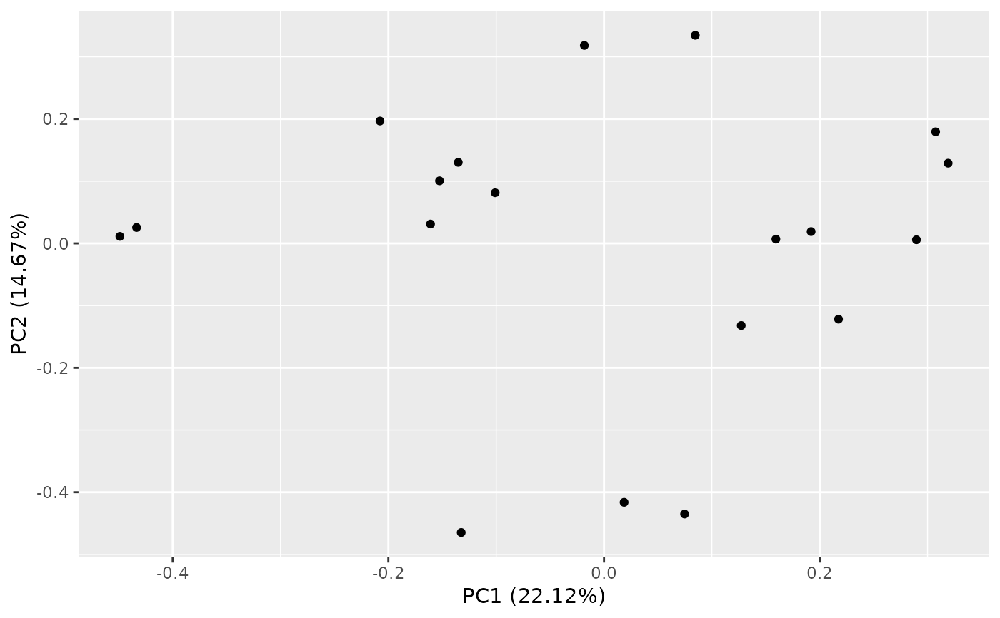
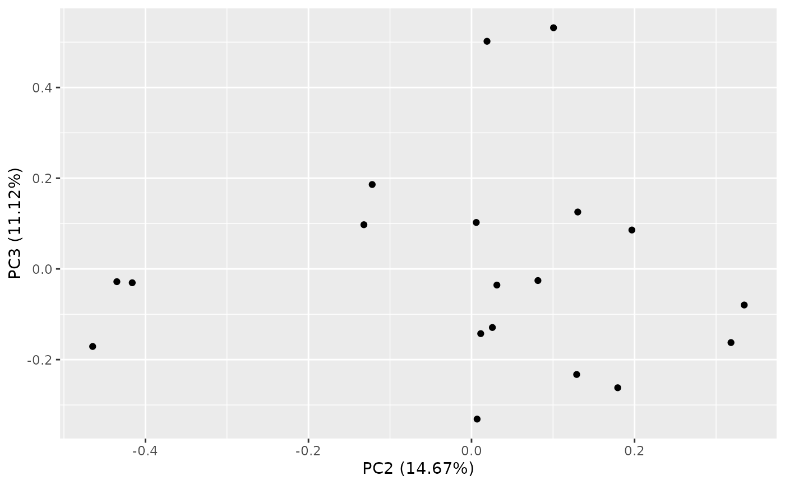
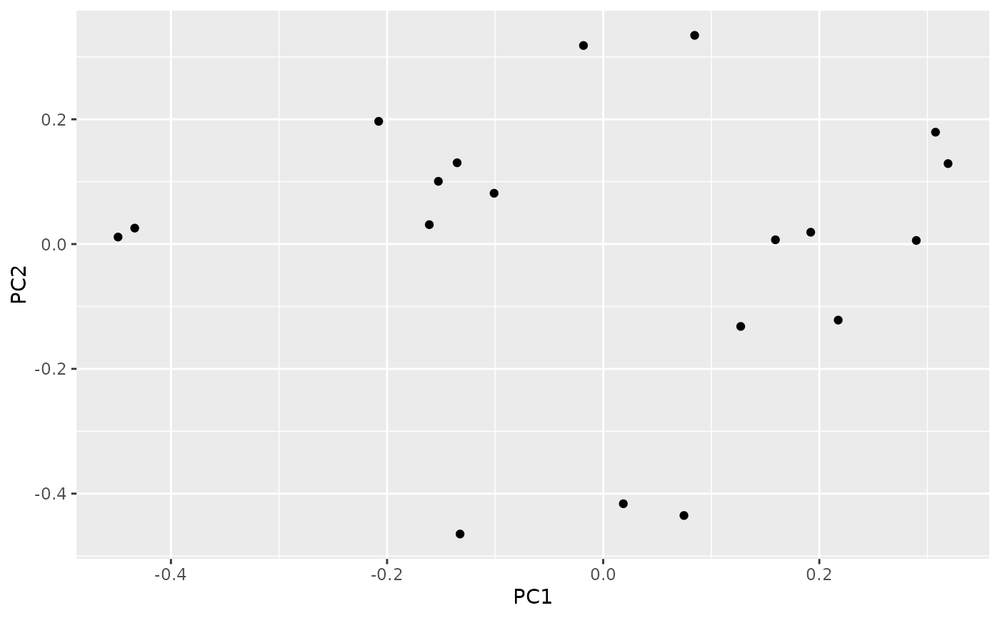
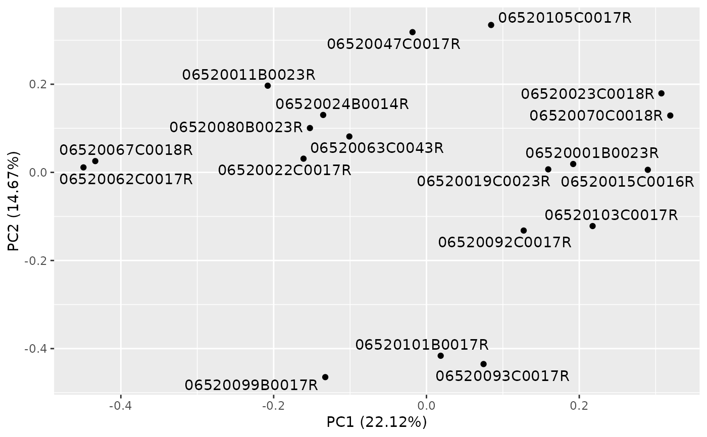

![[Experimental]](figures/lifecycle-experimental.svg)
The calc_pca() function performs principal components analysis of the gene count
vectors across all samples.
A corresponding autoplot() method then can visualize the results.
Arguments
- object
(
AnyHermesData)
input.- assay_name
(
string)
name of the assay to use.- n_top
(
countorNULL)
filter criteria based on number of genes with maximum variance.
Value
A HermesDataPca object which is an extension of the stats::prcomp class.
Details
PCA should be performed after filtering out low quality genes and samples, as well as normalization of counts.
In addition, genes with constant counts across all samples are excluded from the analysis internally in
calc_pca(). Centering and scaling is also applied internally.Plots can be obtained with the
ggplot2::autoplot()function with the corresponding method from theggfortifypackage to plot the results of a principal components analysis saved in aHermesDataPcaobject. Seeggfortify::autoplot.prcomp()for details.
See also
Afterwards correlations between principal components
and sample variables can be calculated, see pca_cor_samplevar.
Examples
object <- hermes_data %>%
add_quality_flags() %>%
filter() %>%
normalize()
result <- calc_pca(object, assay_name = "tpm")
summary(result)
#> Importance of first k=18 (out of 19) components:
#> PC1 PC2 PC3 PC4 PC5 PC6
#> Standard deviation 22.9971 18.7315 16.3042 13.47009 13.05843 11.4881
#> Proportion of Variance 0.2212 0.1467 0.1112 0.07589 0.07132 0.0552
#> Cumulative Proportion 0.2212 0.3679 0.4791 0.55500 0.62632 0.6815
#> PC7 PC8 PC9 PC10 PC11 PC12 PC13
#> Standard deviation 10.60653 9.67291 9.29607 8.97324 8.54474 8.11786 7.70847
#> Proportion of Variance 0.04705 0.03913 0.03614 0.03368 0.03054 0.02756 0.02485
#> Cumulative Proportion 0.72857 0.76770 0.80384 0.83752 0.86805 0.89562 0.92047
#> PC14 PC15 PC16 PC17 PC18
#> Standard deviation 7.20798 6.91976 6.11309 5.77360 4.42960
#> Proportion of Variance 0.02173 0.02003 0.01563 0.01394 0.00821
#> Cumulative Proportion 0.94220 0.96222 0.97785 0.99179 1.00000
result1 <- calc_pca(object, assay_name = "tpm", n_top = 500)
summary(result1)
#> Importance of first k=18 (out of 19) components:
#> PC1 PC2 PC3 PC4 PC5 PC6 PC7
#> Standard deviation 11.2652 9.6518 6.89353 6.34548 5.29254 5.20812 4.70857
#> Proportion of Variance 0.2538 0.1863 0.09504 0.08053 0.05602 0.05425 0.04434
#> Cumulative Proportion 0.2538 0.4401 0.53517 0.61570 0.67172 0.72597 0.77031
#> PC8 PC9 PC10 PC11 PC12 PC13 PC14
#> Standard deviation 4.2012 4.06409 3.7884 3.51647 3.2405 3.07753 3.04570
#> Proportion of Variance 0.0353 0.03303 0.0287 0.02473 0.0210 0.01894 0.01855
#> Cumulative Proportion 0.8056 0.83864 0.8673 0.89208 0.9131 0.93202 0.95058
#> PC15 PC16 PC17 PC18
#> Standard deviation 2.87077 2.65226 2.46289 1.83598
#> Proportion of Variance 0.01648 0.01407 0.01213 0.00674
#> Cumulative Proportion 0.96706 0.98113 0.99326 1.00000
# Plot the results.
autoplot(result)

autoplot(result, x = 2, y = 3)

autoplot(result, variance_percentage = FALSE)

autoplot(result, label = TRUE, label.repel = TRUE)
